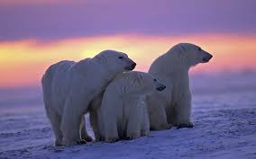

Nombre: oso polar (Ursus maritimus)
Los osos polares tienen la capacidad de caminar y nadar grandes distancias a través del hielo y sus aguas heladas. Son nadadores muy fuertes y hábiles debido a las ligeramente palmeadas y grandes patas delanteras que utilizan para remar. De hecho, algunos osos polares han sido vistos nadando a cientos de kilómetros de tierra, aunque probablemente cubren la mayor parte de esa distancia sobre las pequeñas capas de hielo que flotan en el mar.
Los osos polares viven en uno de los ambientes más fríos del planeta y dependen de una gruesa capa de piel aislaste que cubre a su vez la capa de grasa que les mantiene calientes. Esta piel crece incluso en la parte inferior de sus patas, lo que les protege contra las superficies frías de hielo a la vez que le proporcionan un buen agarre. Su blanco pelaje también actúa como un perfecto camuflaje en la nieve y el hielo circundantes ocultándoles ante sus presas.
Características* Largo: 2-2.5 metros (7 pies, 3 pulgadas a 8 pies)
* Peso: 400-700 kg
¿Qué comen los osos polares?La base de la dieta del oso polar son las focas barbudas y oceladas. Dado que no son precisamente de pisada liviana, los osos polares deben ser cautelosos para acercarse sigilosamente a sus presas.

Tabla con el peso y altura de los osos en las diferentes etapas de su vida
| Bebes | Adolescentes | Adultos |
|---|---|---|
| 1.20mts | 1.50mts | 2-3 mts |
| 80kg | 180-300 | 300-800 |
Si quieres conocer más acerca de los osos solo da click aquí
Fotografia tomada en Autralia 2002
Si deseas contribuir a preservar el habitad de nuestros amigos peludos, dejanoslo saber